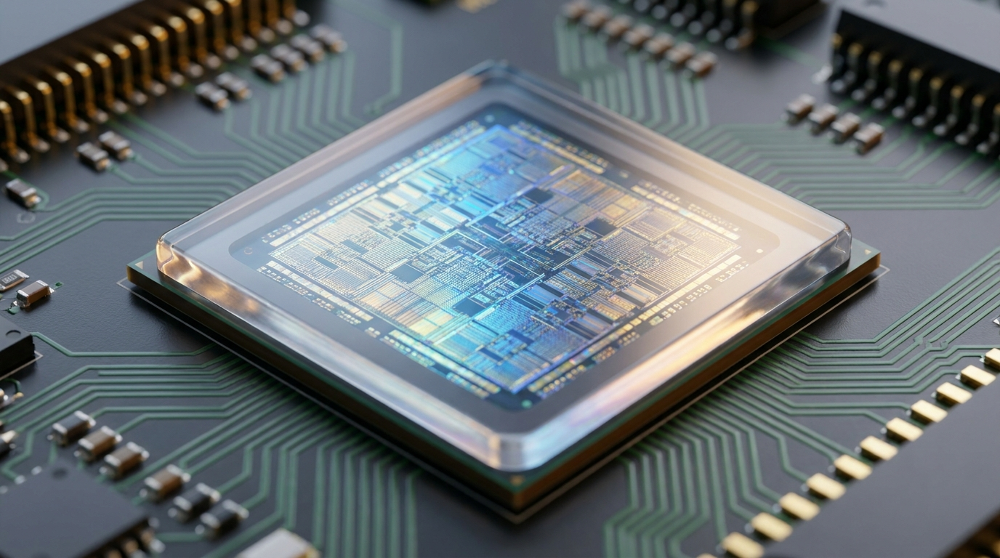

“Wake up, Europe.”
The thread went up on May 28. The argument was compact: America’s stack or China’s. Those are the two choices. Europe cannot build its own. It cannot complete anything at scale. The evidence offered: legislation, fines, stern letters, and press conferences about digital sovereignty.
The frustration is not invented. Anyone who has tracked the AI Office trying to recruit senior talent at civil service salaries, or counted the months between Commission announcements and guidance that actually materializes, can hear the accurate frequency in that critique.
But the binary is a structural argument, not just a mood. It states that Europe cannot build its own stack and therefore must choose between two foreign ones. That argument is wrong. Not because Europe has no flaws, but because it defines sovereignty as all-or-nothing and sets full independence from US and Chinese infrastructure as the only test that counts.
That is the wrong test.
What the Binary Assumes
The paper’s central claim was never that Europe would displace the US hyperscalers at the consumer layer or at the frontier training tier. The argument was narrower: for regulated, public, and high-risk workloads in government, health, defence, and finance, a viable European-controlled infrastructure path would emerge under structural pressure from geopolitics, hardware maturity, and the regulatory framework the EU was building.
The test was not whether Europe could replace AWS. The test was whether Europe could build and operate infrastructure that serves regulated workloads under European legal control.
The EU’s Cloud III framework contract covers the Commission itself, the European Parliament, the External Action Service, and dozens of agencies. The procurement framework was designed to require multi-provider architecture and to prevent single-vendor dependency. For the institutional workload category, the architecture was built to make European-controlled supply the default, not the exception.
That is a procurement architecture, not a press conference.
The Scale Question
The “cannot build at scale” claim has a specific technical target: exascale training compute. Large frontier models require it. Europe, the argument goes, does not have it.
JUPITER is operational. Ranked fourth globally in the November 2025 TOP500, Europe’s first exascale supercomputer delivers 1 exaflop of sustained performance from Forschungszentrum Jülich in Germany. The Booster Module runs NVIDIA GPUs. The Cluster Module runs the SiPearl Rhea1 processor: an 80-core chip designed by French company SiPearl around licensed ARM Neoverse V1 cores, manufactured at TSMC on a 6nm process, and built specifically for European HPC sovereignty requirements. The ISA and fab are not European. The company, the system-level engineering, and the design mandate are.
LUMI in Finland holds ninth place globally. Leonardo in Italy is tenth. MareNostrum 5 in Spain ranks fourteenth in its accelerated partition. These are not announcements. They are machines that exist and are running workloads.
By mid-2026, nineteen AI Factories are selected or operational under EuroHPC’s dedicated AI programme, supported by thirteen Antennas extending coverage further. These systems were built specifically for training large AI models, not repurposed general-purpose supercomputing capacity.
HammerHAI in Stuttgart is among the clearest current examples. Hosted by the High-Performance Computing Center Stuttgart and available since April 2025, the primary system is built on HPE hardware running 215 NVIDIA GB200 NVL4 nodes with 860 GPUs, delivering 15 exaflops of peak AI inference performance. The operating environment wraps the entire system in GDPR and AI Act compliance from the ground up. A startup in Stuttgart training a compliance model on HammerHAI is not paying US cloud margin and is not subject to the CLOUD Act’s extraterritorial reach. That is not a policy aspiration. It is an existing service.
The paper’s Prediction 6 stated that EuroHPC and national compute initiatives would provide sufficient training capacity for European open-weight models targeting regulated domains by end of 2026. The qualification was deliberate: sufficient for European open-weight models in regulated domains, not sufficient to train the next GPT frontier model. The target was defined clearly. The infrastructure trajectory is tracking it.
Mistral and the Industrial Test
The commercial viability argument against European AI has a Mistral-shaped problem.
The day before this article was written, Mistral announced at the AI Now Summit what its enterprise pipeline actually looks like. Airbus: Mistral is implementing AI at the core of company operations and processes, across commercial aircraft, helicopters, defence, and space activities, with a mandate covering the next decade of innovation and a requirement to maintain full control of critical data. BMW Group: Mistral is the central partner for the “Large Industry Model” initiative, building multimodal reasoning models on engineering data for complex development cases including crash simulation. ASML: working with Mistral on optimizing high-performance parts, surrogate models, and control loops in advanced semiconductor environments.
These are not pilots. They are defined enterprise programmes with named deliverables and named partners in three of Europe’s largest industrial companies.
Mistral is also building its own compute infrastructure. A 10 MW inference facility in Les Ulis in the Essonne region of France is scheduled to open in Q3 2026. The stated purpose: direct control over capacity, reducing compute supply chain risk, and providing security and transparency as training and inference hardware converge. A European AI company building its own data center on French soil for sovereignty reasons, while simultaneously closing partnership agreements with Airbus, BMW, and ASML, is not the profile of a sector that cannot build at scale.
In June 2025, Mistral released Magistral, its first reasoning model. Magistral Small is 24 billion parameters, open-weight, and released under Apache 2.0. It is auditable, self-hostable on European infrastructure, and deployable without any external API call. Magistral Medium scored 73.6 percent on AIME 2024. In May 2026, Mistral released Mistral Medium 3.5 with remote agent capabilities. The model trajectory is upward and the deployment flexibility is genuine.
The Hardware Chain

The brain drain argument is the technically strongest version of the critique. It deserves the most careful answer.
Axelera AI is a European AI semiconductor company headquartered at High Tech Campus Eindhoven in the Netherlands. Founded in 2021, it has raised over 450 million dollars in equity, grants, and venture debt since incorporation. In February 2026, a funding round of more than 250 million dollars closed, backed by Innovation Industries, BlackRock, the European Innovation Council Fund, Samsung Catalyst Fund, Invest-NL, and CDP Venture Capital, among others. The company has shipped to more than 500 global customers across defence, industrial manufacturing, robotics, retail, and agritech sectors. Manufacturing runs through TSMC and Samsung.
Axelera builds AI processing units for inference at the edge. The architecture is designed from the ground up for the power and thermal constraints of real-world deployment. A 61.6 million euro EU grant, under the Horizon research and innovation programme, funds development of a scalable AI chiplet for high-performance computing. The company has R&D ties in Belgium, including university partnerships and a presence in Leuven’s semiconductor ecosystem.
HammerHAI includes nine Axelera AIPU nodes in its system specification, with delivery planned for 2027. That is not a current deployment. It is an active integration commitment into funded national compute infrastructure, on a scheduled delivery timeline.
In the same city as Axelera, ASML builds the extreme ultraviolet lithography machines that print the chips that run the world’s AI systems. On May 28, ASML announced it is working with Mistral on AI for advanced semiconductor environments. Two European companies in Eindhoven: one at the foundation of global semiconductor manufacturing, one closing enterprise AI contracts at the scale of Airbus and BMW. The binary does not have a good account of Eindhoven.
SiPearl, a French semiconductor company built under EuroHPC funding to develop high-performance processors for European HPC, has its Rhea1 chip running in the Cluster Module of the world’s fourth most powerful supercomputer. That is a deployed product running at exascale.
What the Regulation Actually Does
The thread treats legislation as evidence of failure. That framing inverts the actual dynamic.
The AI Act and GDPR together create structural demand for European-controlled AI infrastructure in a way that no voluntary market preference could produce. When a German ministry must demonstrate its procurement does not create CLOUD Act exposure, the compliance path leads toward open-weight models deployable on European compute, toward EuroHPC AI Factories with built-in GDPR compliance, toward Magistral Small on HammerHAI instead of a closed-weight US model on a US cloud provider. Not for ideological reasons. For audit reasons.
Magistral Small, under Apache 2.0, auditable in every weight and architecture decision, self-hostable without external API dependency, is the product form that answers that audit question cleanly. The benchmark performance is the secondary issue. The primary issue is whether the model can be deployed under European legal control. It can.
This is not a theoretical mechanism. It is the compliance logic that drives procurement decisions in regulated sectors, and it points toward the European options that exist today.
The Hybrid Model Is Not a Consolation Prize
The binary is only persuasive if you accept that sovereignty must be total to count as meaningful. That standard applies to nothing else in political or economic life.
Europe does not produce its own commercial jet engines, its own GPS satellites, or its own semiconductor lithography equipment in full independence from foreign IP. It maintains strategic autonomy in areas where the dependency risk is highest and the geopolitical exposure is unacceptable. What counts as critical shifts with circumstances. In 2022, that definition expanded to include gas supply. In 2025, the CLOUD Act’s extraterritorial reach and active US tariff pressure made cloud infrastructure for government and health data newly critical under the same logic.
The model The Great Return described is not full independence. It is targeted sovereignty: European-controlled infrastructure for workloads where the dependency risk is unacceptable, with US hyperscalers remaining viable for non-sensitive commercial workloads where the risk calculus is genuinely different. A retailer’s email is not the same sovereignty problem as the Commission’s budget negotiations or a hospital’s patient records. The hybrid model acknowledges that distinction. The binary does not.
Slow does not mean absent. Fragmented does not mean failed.
The Record
The paper was published in February 2026. It made twelve predictions about the European migration away from US-controlled infrastructure. Eleven are tracking or confirmed. One was revised when the Omnibus closed on 7 May, shifting the primary AI Act enforcement category to December 2027.
JUPITER is running and ranked fourth in the world. Nineteen AI Factories are selected or operational. HammerHAI is serving industrial AI workloads in Stuttgart. Axelera AI closed more than 250 million dollars in February 2026 and has active integration commitments in European national compute infrastructure. Mistral has enterprise programmes with Airbus, BMW, and ASML, is building its own French inference facility, and released an open-weight reasoning model under Apache 2.0. SiPearl’s Rhea1 is running in JUPITER’s Cluster Module at exascale.
This is not fast. It is not perfectly coordinated. Several national stacks are fragmented and do not interoperate. Some timelines will slip. The AI Office classification guidelines are still not published. The regulatory sandbox does not yet exist.
But the stack is building. Slower than ideal, more fragmented than necessary, more hybrid than the sovereignty advocates would prefer. Real, and accelerating under geopolitical pressure that is not going away.
That is not two choices. That is a third path, assembling itself under the pressure the binary framing pretends does not exist.